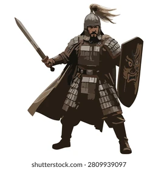

A Lenda de Aetheria Há milhares de anos, o mundo de Aetheria era protegido por cinco cristais mágicos, conhecidos como Núcleos Elementais. Cada cristal controlava uma força da natureza: fogo, água, vento, terra e energia. Durante séculos, os cristais mantiveram o equilíbrio do mundo. Até que, em uma noite, uma enorme tempestade negra apareceu no céu. Dela surgiu uma criatura chamada Varkhan, o Rei das Sombras. Ele acreditava que os humanos haviam desperdiçado o poder dos cristais e decidiu destruir o mundo para reconstruí-lo sob seu domínio. Varkhan conseguiu corromper quatro dos cinco Núcleos Elementais. Apenas o cristal da energia permaneceu intacto, escondido em uma antiga cidade subterrânea. O protagonista O jogador controla Kael, um jovem explorador que vive em uma pequena vila cercada por montanhas. Durante uma noite, Kael encontra um fragmento brilhante caindo do céu. Quando toca no objeto, uma voz misteriosa fala dentro de sua mente: "O último guardião despertou." Na manhã seguinte, a vila é atacada por criaturas das sombras. Kael tenta proteger sua família e seus amigos, mas descobre que possui uma habilidade especial: consegue absorver a energia dos antigos cristais. Ele então parte em uma jornada para encontrar os cinco Núcleos Elementais antes que Varkhan consiga reunir todo o poder. O mundo O jogo possui um enorme mundo 3D aberto dividido em regiões: 🔥 Vale de Magma — uma região vulcânica habitada por criaturas de fogo. 🌊 Reino Submerso — antigas ruínas escondidas no fundo do oceano. 🌪️ Montanhas Celestiais — ilhas flutuantes conectadas por pontes e correntes de vento. 🌳 Floresta dos Gigantes — uma floresta misteriosa onde as árvores parecem estar vivas. 🏜️ Deserto de Arkan — uma região cheia de templos antigos e cidades abandonadas. 🌑 Castelo das Sombras — a fortaleza de Varkhan, localizada em uma dimensão corrompida. Cada região possui inimigos, quebra-cabeças, tesouros e chefes próprios. A grande revelação Ao longo da aventura, Kael descobre que os cristais não foram criados para proteger os humanos. Eles foram criados para conter uma entidade ainda mais poderosa chamada Elyon, uma criatura capaz de apagar mundos inteiros. Varkhan sabia disso. Ele não queria simplesmente dominar Aetheria. Ele queria destruir os cristais para impedir que Elyon continuasse aprisionado dentro deles. Kael então percebe que talvez Varkhan não seja o verdadeiro vilão. O final No confronto final, Kael chega ao coração do Castelo das Sombras e encontra Varkhan. Depois da batalha, Varkhan revela a verdade: "Se você restaurar os cristais, libertará Elyon." Kael precisa tomar uma decisão: Final 1 — O Guardião Kael restaura os cristais e se torna o novo guardião de Aetheria, mantendo Elyon aprisionado. Final 2 — O Libertador Kael destrói os cristais e liberta Elyon, mas o mundo começa a desaparecer. Final 3 — O Sacrifício Kael absorve toda a energia dos cinco cristais e usa seu próprio corpo como prisão para Elyon. Aetheria é salva, mas Kael desaparece. No último momento, uma pequena luz surge no céu. Uma voz diz: "Um verdadeiro herói nunca desaparece." A tela fica preta. Então aparece: A LENDA DE AETHERIA "A aventura ainda não terminou..."